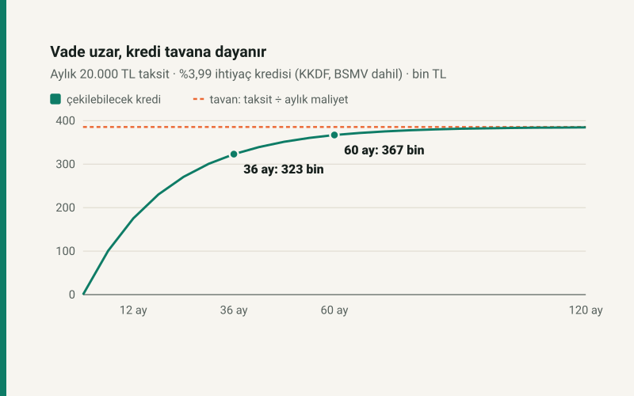

Kısa cevap
Aynı taksitle vadeyi uzatmak kredi tutarını artırır ama her ek yıl bir öncekinden daha az getirir, buna karşılık her yıl aynı tutarı ödetir. Tutarın bir tavanı vardır: taksit ÷ aylık maliyet. %3,99 faizli ihtiyaç kredisinde KKDF ve BSMV ile aylık maliyet %5,187, tavan 385.579 TL.
36 ay bu tavanın %83,8'ine, 60 ay %95,2'sine ulaşır. 60 aydan sonra vade uzatmak neredeyse hiç kredi getirmez.
Aynı taksit, farklı vade
| Vade | Çekilebilecek kredi | Toplam geri ödeme | Faiz ve vergi | Tavanın yüzdesi |
|---|---|---|---|---|
| 12 ay | 175.400 TL | 239.986,03 TL | 64.586,03 TL | %45,49 |
| 24 ay | 271.000 TL | 479.961,62 TL | 208.961,62 TL | %70,28 |
| 36 ay | 323.100 TL | 719.917,72 TL | 396.817,72 TL | %83,80 |
| 48 ay | 351.500 TL | 959.880,25 TL | 608.380,25 TL | %91,16 |
| 60 ay | 367.000 TL | 1.199.909,74 TL | 832.909,74 TL | %95,18 |
| 120 ay | 384.600 TL | 2.399.471,99 TL | 2.014.871,99 TL | %99,75 |
Her ek yıl 240.000 TL fazla ödetir. Karşılığında gelen kredi hızla küçülür: 12 aydan 24 aya 95.600 TL, 24'ten 36'ya 52.100 TL, 36'dan 48'e 28.400 TL, 48'den 60'a 15.500 TL.
Neden bir tavan var?
Eşit taksitli kredide çekilebilecek tutar A = T × (1 − (1 + r)^−n) ÷ r. Vade (n) büyüdükçe parantez 1'e yaklaşır ve tutar T ÷ r'ye dayanır. Taksit o noktada neredeyse tamamen faize ve vergiye gider; anapara pek azalmaz. r burada faiz değil, KKDF ve BSMV eklenmiş aylık maliyettir: %3,99 × 1,30 = %5,187.
Konut kredisinde
Konut kredisi KKDF ve BSMV'den istisnadır; aylık %2,99 faizle aynı 20.000 TL taksitin tavanı 668.896 TL. 60 ay 554.600 TL, 120 ay 649.400 TL, 240 ay 668.300 TL getirir. 120 aydan 240 aya çıkmak 18.900 TL fazla kredi için 2.400.000 TL fazla ödetir.
Varsayımlar
- Faiz oranları örnektir ve vade boyunca sabittir; bankalar vadeye göre farklı faiz verir.
- Dosya masrafı ve sigorta dahil değildir. BDDK'nın vade ve kredi-değer sınırları ayrıca uygulanır.
Kendi taksitinizle: ne kadar kredi çekebilirim? Ödeme planı için: kredi hesaplama.
Kaynaklar
- Kredi hesabı: sitenin kredi aracındaki eşit taksit formülü ve ödeme planı (kredi-hesaplama/hesap.js).
- 6802 sayılı Gider Vergileri Kanunu m.28 (BSMV) ve KKDF kararları: tüketici kredilerinde %15 + %15, konut kredisinde istisna.
Tablodaki tutarlar kredi aracının ödeme planıyla yeniden hesaplanır; otomatik test, her tutarın taksiti aşmadığını ve 100 TL fazlasının aştığını sınar.
Sık sorulan sorular
Kredi vadesini uzatmak mantıklı mı?
Taksiti düşürmek için evet, daha fazla kredi için giderek hayır. Aynı 20.000 TL taksitle 48 aydan 60 aya çıkmak yalnız 15.500 TL fazla kredi getirir, 240.000 TL fazla ödetir.
Vade uzasa da neden daha fazla kredi çekilemiyor?
Tutar taksit ÷ aylık maliyete yaklaşır. %3,99 faizli ihtiyaç kredisinde bu 385.579 TL; vade ne olursa olsun geçilemez.
Konut kredisinde tavan neden daha yüksek?
Konut kredisi KKDF ve BSMV ödemez; aylık maliyet faizin kendisidir. %2,99 faizle tavan 668.896 TL.